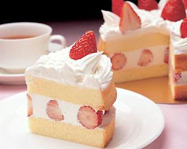

Easy Japanese Strawberry Shortcake Recipe for Beginners
Description
Japanese Strawberry Shortcake is a light and airy dessert that has become a classic in Japanese bakeries. This cake is known for its fluffy sponge layers, fresh whipped cream, and juicy strawberries. Unlike the denser Western versions, the Japanese version is delicate and less sweet, allowing the natural flavors of the strawberries and cream to shine. It's a perfect cake for any celebration or simply to enjoy with a cup of tea.

Main Ingredients
- For the sponge cake:
- 4 large eggs
- 2/3 cup or 130 grams granulated sugar
- 1 cup or 120 grams all-purpose flour
- 1/4 cup or 60 grams unsalted butter, melted
- 1/4 cup or 60 ml milk
- 1 teaspoon vanilla extract
- For the filling and decoration:
- 1 1/4 cups heavy cream
- 2 tablespoons granulated sugar
- 1 teaspoon vanilla extract
- 1 1/2 cups fresh strawberries, hulled and halved
- Whole strawberries for topping
Preparation
- Preheat the oven to 350°F (175°C). Line the bottom of two 8-inch round cake pans with parchment paper. Do not grease the sides.
- In a large bowl, beat the eggs with an electric mixer on high speed. Gradually add the sugar and continue beating until the mixture is thick, pale, and has tripled in volume.
- Sift the flour over the egg mixture in three additions, folding gently after each addition to avoid deflating the batter.
- In a small bowl, combine the melted butter, milk, and vanilla extract. Take a small portion of the batter and mix it into the butter mixture to lighten it. Then, gently fold this back into the main batter until well combined.
- Divide the batter evenly between the prepared pans and bake for 20-25 minutes, or until the cakes are golden and a toothpick inserted into the center comes out clean. Let the cakes cool completely in the pans on a wire rack.
- In a medium bowl, whip the heavy cream, sugar, and vanilla extract until soft peaks form. Be careful not to overwhip, as the cream should be light and spreadable.
- To assemble, place one cake layer on a serving plate. Spread a layer of whipped cream over the top, then arrange the halved strawberries over the cream. Spread a thin layer of cream over the strawberries to help the top layer of cake adhere.
- Place the second cake layer on top, then spread the remaining whipped cream over the top and sides of the cake. Decorate with whole strawberries as desired.
- Chill the cake in the refrigerator for at least 1 hour before serving. Slice and enjoy!